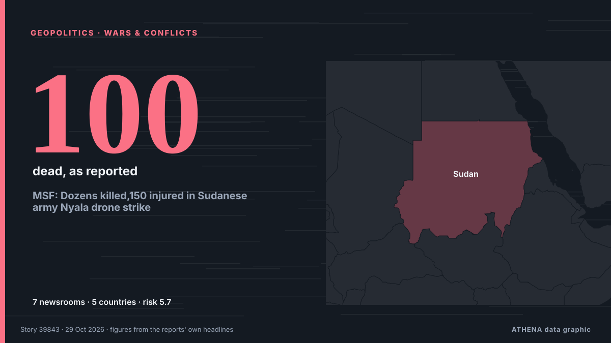

MSF: Dozens killed,150 injured in Sudanese army Nyala drone strike

On Monday 26 October, at around 8 p.m. local time, a drone strike by the. из Radio Tamazuj
Независимые источники: 7 изданий в 5 странах, с 27 окт.; первым сообщил The National; освещение идёт на спад. ATHENA оценивает риск как повышенный (5.7/10), прежде всего из-за тяжести описываемого ущерба и качества доказательств. Уверенность — 86 % (высокая); подтверждают независимые источники: 7 изданий, средняя надёжность источников — 77 %.
Почему это важно: События в сфере безопасности и дипломатии могут менять союзы, торговлю и рынки далеко за пределами непосредственно затронутых стран.
Что изменилось: 7 новых сообщений от 6 редакций за 24 часа до 29 окт..
Заголовки приводятся на английском языке, как они были опубликованы.
Коротко в цифрах
Отобрано, оценено и написано по опубликованной методологии ATHENA. Ни один редактор не вмешивается в отдельные события. Как это создаётся ›
| 27 Oct 19:34 UTC | 1 |
|---|---|
| 27 Oct 21:34 UTC | 0 |
| 27 Oct 23:34 UTC | 0 |
| 28 Oct 01:34 UTC | 0 |
| 28 Oct 03:34 UTC | 0 |
| 28 Oct 05:34 UTC | 0 |
| 28 Oct 07:34 UTC | 0 |
| 28 Oct 09:34 UTC | 3 |
| 28 Oct 11:34 UTC | 0 |
| 28 Oct 13:34 UTC | 0 |
| 28 Oct 15:34 UTC | 0 |
| 28 Oct 17:34 UTC | 1 |
| 28 Oct 19:34 UTC | 0 |
| 28 Oct 21:34 UTC | 1 |
| 28 Oct 23:34 UTC | 0 |
| 29 Oct 01:34 UTC | 0 |
| 29 Oct 03:34 UTC | 1 |
| 29 Oct 05:34 UTC | 1 |
| 27 Oct 19:39 UTC | 3.9 |
|---|---|
| 28 Oct 09:41 UTC | 4.8 |
| 28 Oct 09:48 UTC | 5.8 |
| 29 Oct 06:54 UTC | 5.7 |
Откуда эти цифры
Значимость
Риск
Уверенность
Освещение — кто сообщил и когда
заголовок в оригинале · открывает источник- The National · ОАЭ · United Arab EmiratesSAF drone strike on busy Sudanese market kills dozens, says MSF
- Arab News · Саудовская Аравия · Saudi ArabiaMore than 100 people killed in Sudanese army drone attack on market says Sudanese rights group
- Radio Dabanga · Судан · SudanTasees places South Darfur market strike toll at 188 — MSF receives 36 bodies in Nyala
- The Rio Times · Бразилия · BrazilNyala Market Strike Killed 21 to 102
- The New Arab · INTDarfur market strike killed civilians selling food to fighters
- AllAfrica · AFRSudan: Tasees Places South Darfur Market Strike Toll At 188 - MSF Receives 36 Bodies in Nyala
- Radio Tamazuj · Южный Судан · South SudanMSF: Dozens killed,150 injured in Sudanese army Nyala drone strike